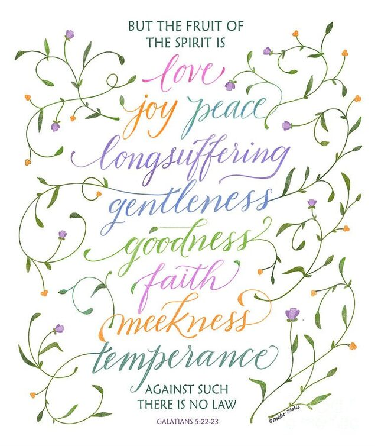
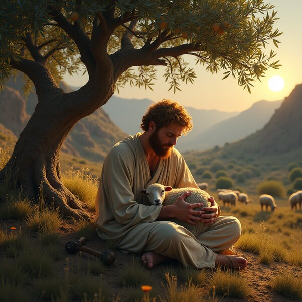

Led by the Spirit
“For as many as are led by the Spirit of God, they are the sons of God.”
Romans 8:14 (KJB)Heirs of the promise
The family of God has an inheritance — not of land or lineage, but of promise. All who are of faith are Abraham's seed, and heirs according to the promise.
Our heritage does not run through blood or soil. It is given by promise and received by faith — to everyone who believes.
“Know ye therefore that they which are of faith, the same are the children of Abraham.”
Galatians 3:7 (KJB)
“And if ye [be] Christ's, then are ye Abraham's seed, and heirs according to the promise.”
Galatians 3:29 (KJB)
“They which are the children of the flesh, these [are] not the children of God: but the children of the promise are counted for the seed.”
Romans 9:8 (KJB)
The promise is for everyone who believes.
The inheritance of God's children cannot be lost, defiled, or taken away. It is kept for them, and they are kept for it.
“To an inheritance incorruptible, and undefiled, and that fadeth not away, reserved in heaven for you.”
1 Peter 1:4 (KJB)
“And if children, then heirs; heirs of God, and joint-heirs with Christ.”
Romans 8:17 (KJB)
“Wherefore thou art no more a servant, but a son; and if a son, then an heir of God through Christ.”
Galatians 4:7 (KJB)
“Giving thanks unto the Father, which hath made us meet to be partakers of the inheritance of the saints in light.”
Colossians 1:12 (KJB)
The Spirit, and the fruit it grows.
“For as many as are led by the Spirit of God, they are the sons of God.”
Romans 8:14 (KJB)
“The fruit of the Spirit is love, joy, peace, longsuffering, gentleness, goodness, faith, meekness, temperance.”
Galatians 5:22–23 (KJB)“There is neither Jew nor Greek… for ye are all one in Christ Jesus.”
Galatians 3:28 (KJB)
God's people are gathered from all nations into a single fold under a single shepherd. The invitation is not reserved for one people — it is carried to all.
“And other sheep I have, which are not of this fold: them also I must bring… and there shall be one fold, [and] one shepherd.”
John 10:16 (KJB)
“And hath made of one blood all nations of men for to dwell on all the face of the earth.”
Acts 17:26 (KJB)
The King
The one fold has one shepherd, and he is King of kings and Lord of lords. His kingdom is everlasting, and every knee shall bow to him.
“And he hath on [his] vesture and on his thigh a name written, KING OF KINGS, AND LORD OF LORDS.”
Revelation 19:16 (KJB)
The covenant given to Abraham was never fenced to one family of flesh. God promised that in him all the families of the earth would be blessed — a promise reaching to all who are afar off, as many as the Lord shall call.
“And I will bless them that bless thee… and in thee shall all families of the earth be blessed.”
Genesis 12:3 (KJB)
“And I will establish my covenant between me and thee and thy seed after thee in their generations for an everlasting covenant, to be a God unto thee, and to thy seed after thee.”
Genesis 17:7 (KJB)
“For the promise is unto you, and to your children, and to all that are afar off, [even] as many as the Lord our God shall call.”
Acts 2:39 (KJB)
The greatest inheritance of God's family is not land or treasure, but God himself. He is the portion of his people, and his compassions fail not.
“The LORD [is] the portion of mine inheritance and of my cup: thou maintainest my lot.”
Psalm 16:5 (KJB)
“The lines are fallen unto me in pleasant [places]; yea, I have a goodly heritage.”
Psalm 16:6 (KJB)
“[It] [is] [of] the LORD'S mercies that we are not consumed, because his compassions fail not. [They are] new every morning: great [is] thy faithfulness.”
Lamentations 3:22–23 (KJB)
God's heirs hold their treasure lightly here, for they are citizens of a city not yet seen. Their hope is not a patch of ground but the presence of God with his people.
“These all died in faith, not having received the promises, but having seen them afar off… and confessed that they were strangers and pilgrims on the earth.”
Hebrews 11:13 (KJB)
“I will be their God, and they shall be my people.”
2 Corinthians 6:16 (KJB)
“Behold, the tabernacle of God [is] with men, and he will dwell with them, and they shall be his people, and God himself shall be with them, [and be] their God.”
Revelation 21:3 (KJB)
All who are of faith. “Know ye therefore that they which are of faith, the same are the children of Abraham.” (Galatians 3:7, KJB) The children of the promise are counted for the seed (Romans 9:8).
No. God hath made of one blood all nations of men (Acts 17:26), and gathers one fold out of every nation (John 10:16). There is no preferred people and no excluded people in Christ.
An inheritance incorruptible and undefiled, reserved in heaven (1 Peter 1:4). The children of God are heirs of God, and joint-heirs with Christ (Romans 8:17).
No. Belonging is by promise and faith; fruit grows from the root and does not earn the place. The promise is for everyone who believes.